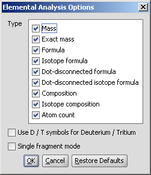
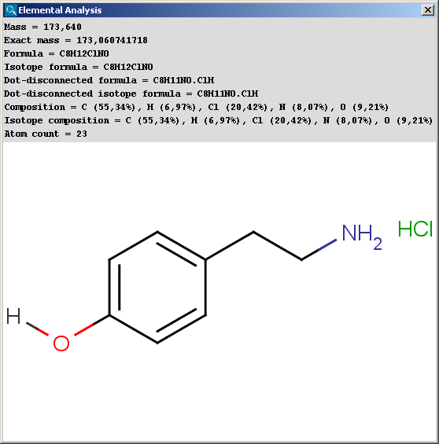

Basic molecular values related to the elemental composition of
the molecule are calculated by the Elemental Analysis plugin.
In the Elemental Analysis Options panel you can check different properties:
|  |
Mass: average molecular mass calculated from the standard atomic weights 1.
Exact mass: monoisotopic mass calculated from the weights 2 of the most abundant natural isotopes of the elements.
Formula: chemical formula of the molecule according to the Hill system 3: the number of carbon atoms is indicated first, the number of hydrogen atoms next (including deuterium and tritium when using D and T symbols), and then the number of all other chemical elements subsequently, in alphabetical order. When the formula contains no carbon, all the elements, including hydrogen, are listed alphabetically.
Isotope formula: chemical formula of the molecule listing isotopes separately according to the Hill system.
Dot-disconnected formula: chemical formula of the molecule(s) separating fragment formulas by dots (e.g. salts, counterions, solvent molecules etc. are present).
Dot-disconnected isotope formula: chemical formula of the molecule separating fragment formulas by dots and listing isotopes separately.
Composition: elemental composition given in weight percentage (w/w %) calculated from the atomic masses.
Isotope composition: elemental composition listing isotopes separately (w/w %).
Atom count: number of all atoms in the molecule.
Use D/T symbols for deuterium/Tritium: if unchecked (default), isotopes of hydrogen are displayed in formulas as 2H and 3H, if checked, D and T symbols are used.
Single fragment mode: if unchecked (default), the calculation handles unlinked molecules together (e.g. salt molecules), summing up the masses of each component, if checked, the results are displayed in a scroll window.
The results are shown in a new window:
|  |
The contents of the text field can be copied to the clipboard by Ctrl+C, the structure field offers a context menu from MarvinView.